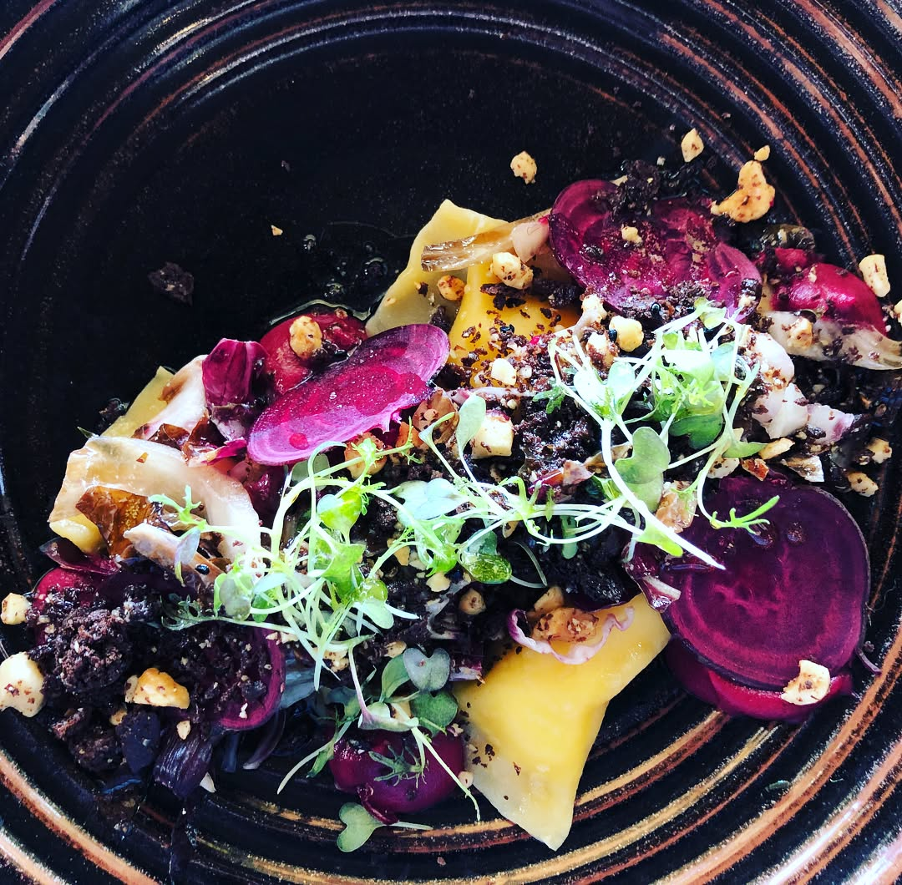

This trip to Australia was absolutely delicious 😋👌ğŸ¼if you ever decide to visit this amazing country - you must go to Margaret River, Western Australia. It has almost 200 wineries that produce not only beautiful wines but also have very nice restaurants. Highly recommend @willsdomain, @vassefelixwines for wine and dining, @ameliaparkwines for a top notch wine tasting experience 👌🼠also, if you decide to stay at Dunsborough - highly recommend to stay at Lanterns Retreat and check out breakfasts at Wild & Woods cafe ğŸ‘🼠— #margaretriver #dunsborough #foodblogger #foodlover #winery #westernaustralia #traveltips #foodadventures
2017-12-07 07:57:03
Back to main page